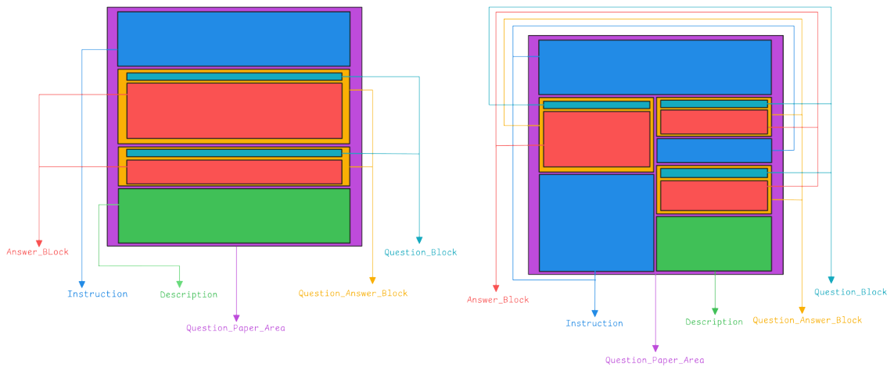
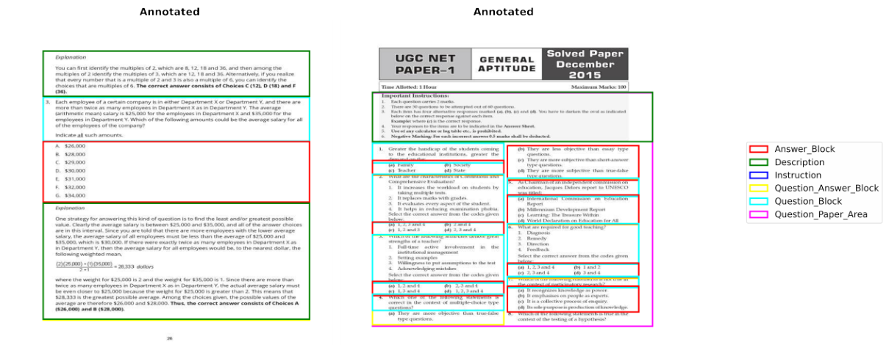
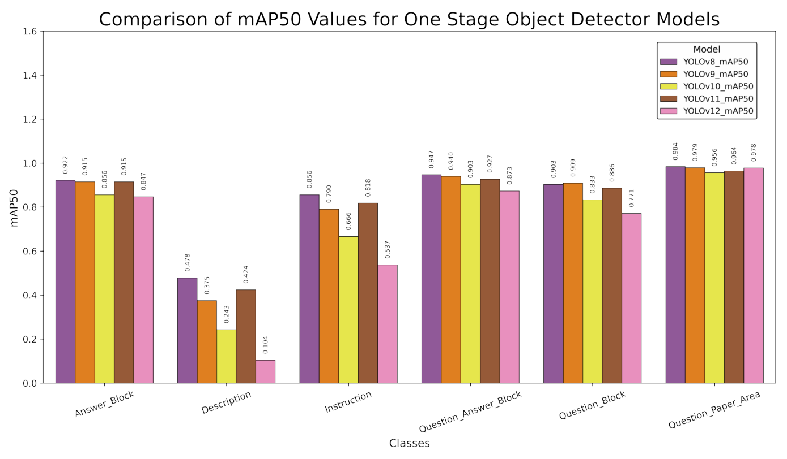

Teaching computers to see the structure of an exam paper
Past exam papers are a goldmine for students, but many of them only exist as scans or PDFs, where a computer sees pixels and not questions. We built HiLEx, a collection of 1,965 exam pages in which every question, answer block and instruction is marked by hand. Then we tested ten well-known detection models on it, to see how well today's software can read the structure of a page.
The problem
Turning a stack of old papers into a searchable question bank sounds simple. It is not. A page may have one column or two. A question may sit above its answer options, or next to them. Instructions and explanations are squeezed in between, often as a single line of text.
The field that studies this is called document layout analysis: finding the parts of a page and what role each one plays. Plenty of datasets exist for scientific papers, magazines and reports. None of the ones we looked at marks the question and answer structure that an exam page has.
What is in HiLEx
We collected pages from eight exams: GMAT, SAT, GRE, GATE, UGC-NET, BANK, JEE and UPSC. Most are multiple-choice, and some also have descriptive questions. The papers are publicly available as previous years' papers or free mock exams, and we turned the relevant pages into images.
Each page is labelled with boxes of six kinds. The names are a little technical, but the idea is plain. The whole printed area is the Question_Paper_Area. Inside it sit Question_Answer_Blocks, and inside those the Question_Block and the Answer_Block. Separate from them are Instruction and Description, which hold guidance for the candidate and the explanation of a solution.

Three expert annotators did the labelling in Roboflow over two months. They first practised on 10 sample papers. Each also labelled the same 100 shared pages, so that we could measure how much they agreed, using a score called Cohen's kappa. We set the bar at 0.90. The annotations come in two common formats, YOLO and COCO, so other researchers can load them directly.

How we tested it
We trained ten models, in four families. The YOLO models (versions 8 to 12) look at the page once and propose all boxes at the same time. DETR and RT-DETR use attention, the mechanism behind modern language models. Detectron2 first proposes candidate regions and then refines them. Florence-2 and PaLI-Gemma 2 are large models trained on both images and text.
Each model trained for 25 epochs on an NVIDIA A100 GPU. We held back 10% of the pages for testing, which gave 199 pages with 1,918 labelled regions. The main score is mAP50. Roughly, a predicted box counts as correct if it overlaps the true box by at least half, and the score averages over all classes. A stricter version, mAP50-95, demands tighter overlaps.
What we found
Large regions are easy. YOLOv8 finds the Question_Paper_Area with an mAP50 of 0.984. Small, rare regions are hard. Description boxes, with only 320 labelled examples in the whole dataset, reached 0.478 at best among the YOLO models, and as low as 0.104 for YOLOv12. DETR managed 0.071.

Across all classes, YOLOv8 scored 0.848 mAP50, PaLI-Gemma 2 scored 0.835, YOLOv11 0.822, YOLOv9 0.818 and Florence-2 0.810. RT-DETR reached 0.606 and DETR 0.502. YOLOv12, the newest, scored 0.685, below its older siblings. Newer or larger did not mean better here.
Looking at the mistakes, we saw two patterns. Some models draw many redundant, overlapping boxes. Others miss Instruction and Description regions altogether.
What it does not do
HiLEx has limits that we state in the paper. The pages are English only, and mostly come from Indian national exams plus GMAT, GRE and SAT. The dataset is unbalanced: GATE has 668 pages, UPSC just 36. It contains page images and boxes, but no text of the questions yet.
Next we want to add the text itself, so that models which read words and layout together can be tested, and to add exams in other languages and from other regions. That is what would turn this from a benchmark into a tool for building question banks.
How to cite the paper
U Aich, S Chakraborty, D Sadhukhan, Swarnendu Ghosh, T Saha (2025). HiLEx: Image-Based Hierarchical Layout Extraction from Question Papers. Document Analysis and Recognition – ICDAR 2025, pp. 485–505 · Springer (LNCS).